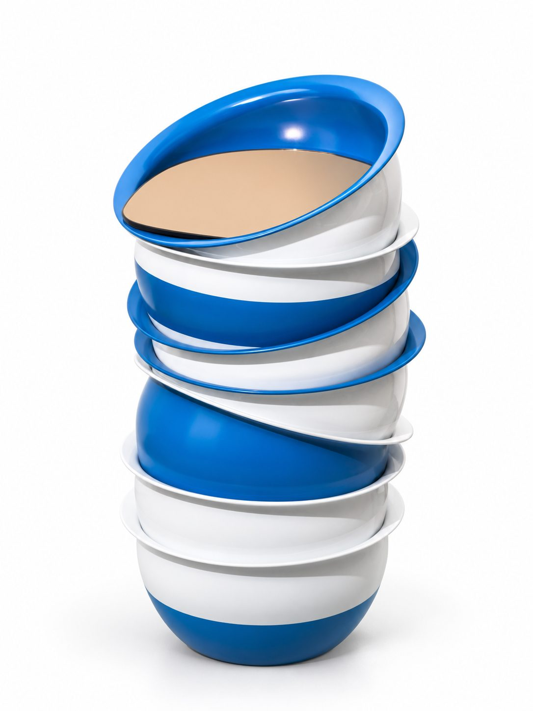
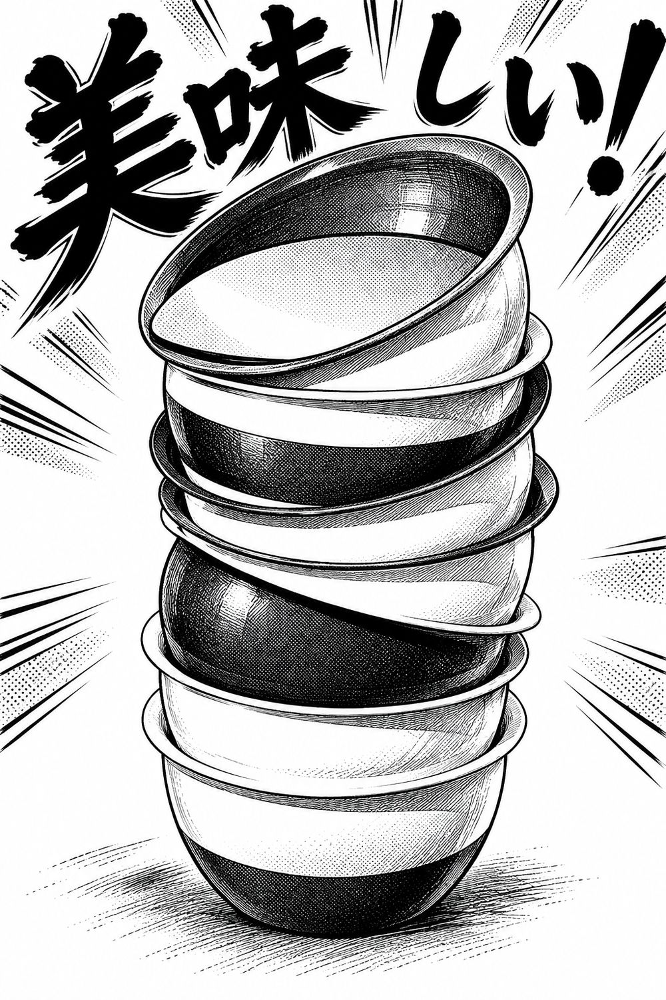

WORK 10 / 29
The Bowl
A familiar noodle bowl becomes a sculptural side table.
Year2018
StageLimited edition

DESIGN STORY
The Bowl transforms the familiar image of stacked noodle bowls into a sculptural side table. Drawing on everyday dining and the exaggerated language of manga, the piece uses repetition, colour and proportion to make an ordinary object surprising. A playful meeting of storytelling and function, it celebrates the visual richness of daily rituals.
PROJECT LINKS
- Deesawatwww.deesawat.com
SELECTED PRESENTATIONS
- 2018Bangkok Design Week
